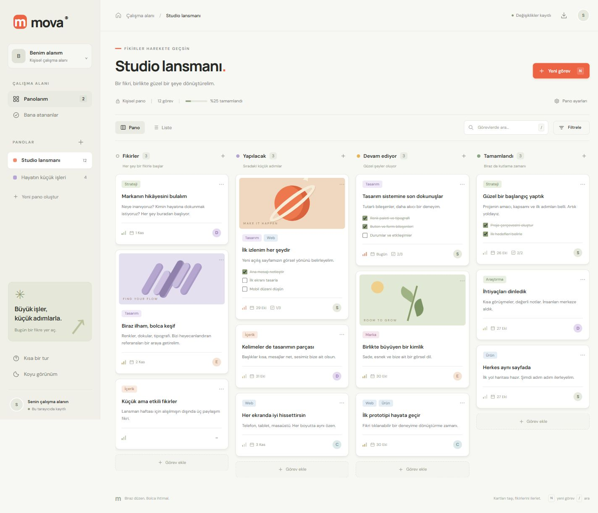
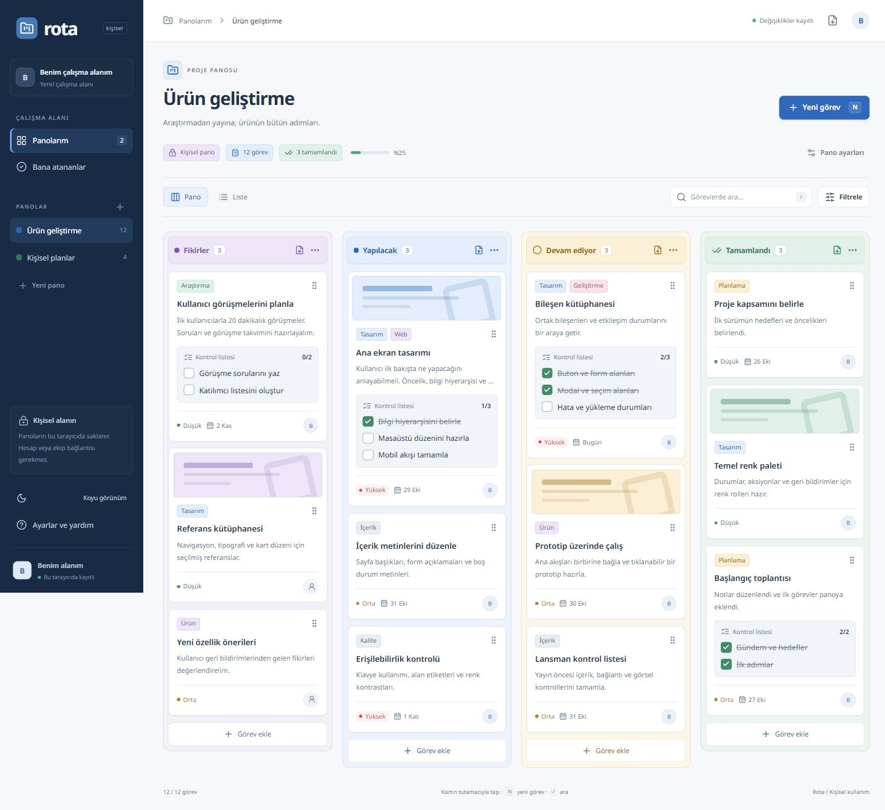
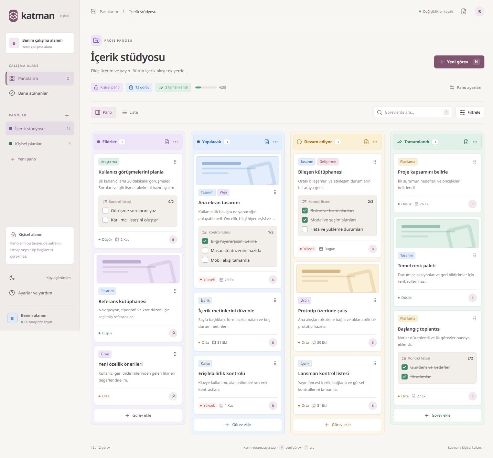

01HTML / CSS / JavaScript

Mova
VanillaSıcak tonlar, sade kartlar ve günlük işlere yer açan bir çalışma alanı.
Bağımlılıksız arayüzKişisel panolar
Mova’yı aç
Fikirden tamamlandıya uzanan üç çalışma alanı.
Birini aç,
deneyimle; sonra diğerine geç.

Sıcak tonlar, sade kartlar ve günlük işlere yer açan bir çalışma alanı.

Belirgin aşamalar, ayrıntılı görevler ve ürün çalışmalarına uygun bir düzen.

Açık bir zemin, yumuşak renkler ve içerik üretimi için esnek bir çalışma alanı.